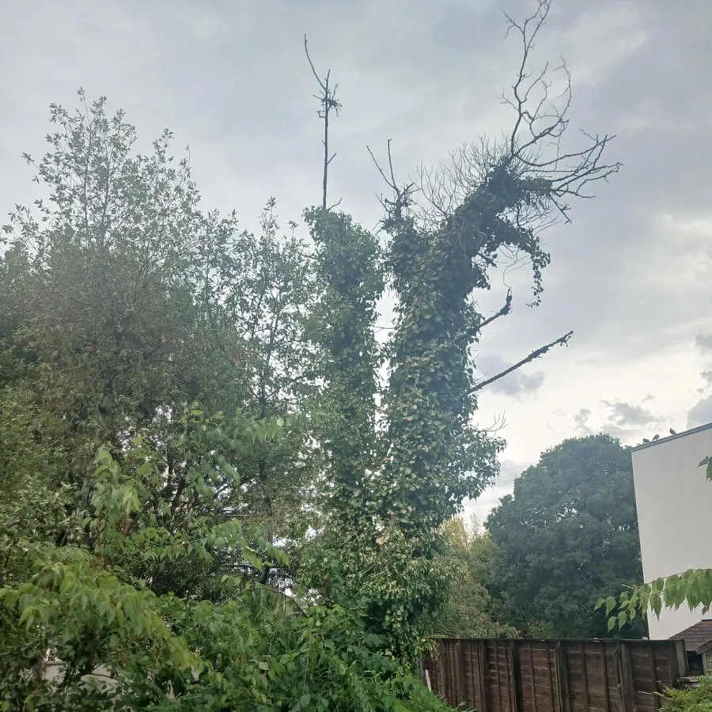
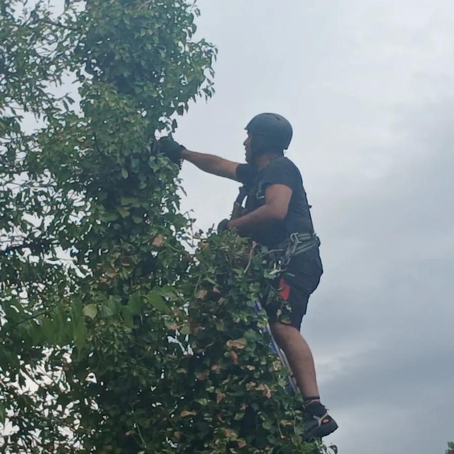
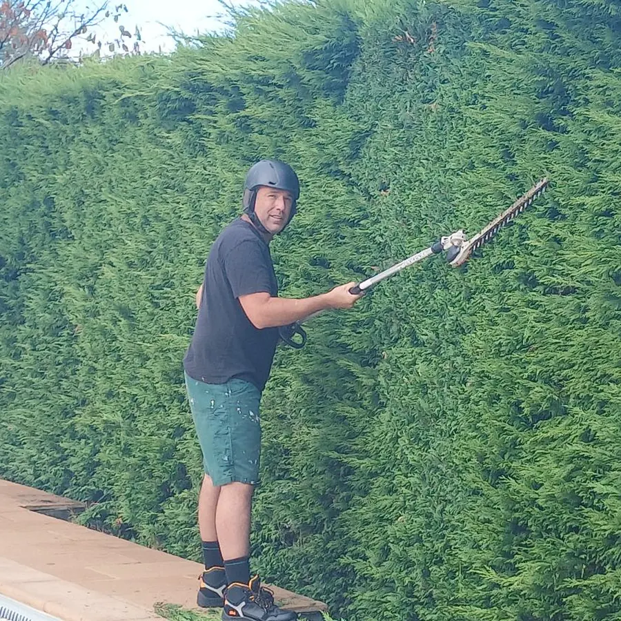
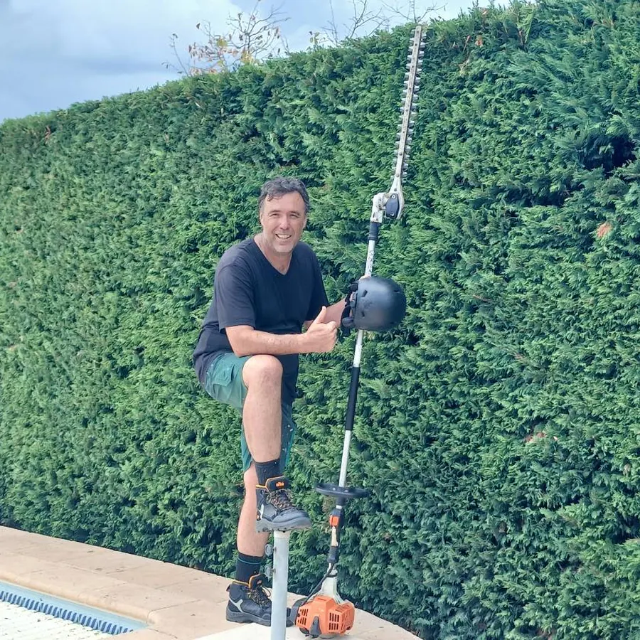
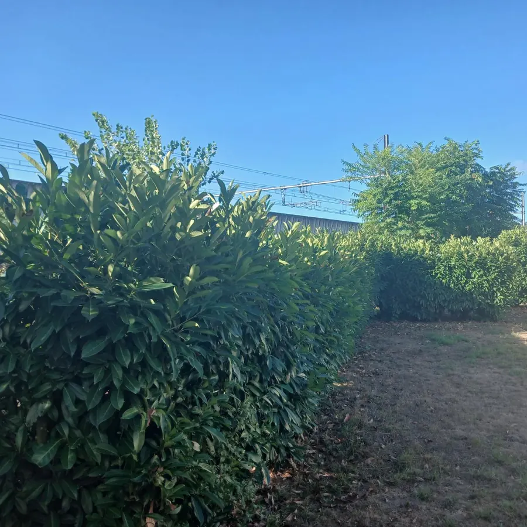
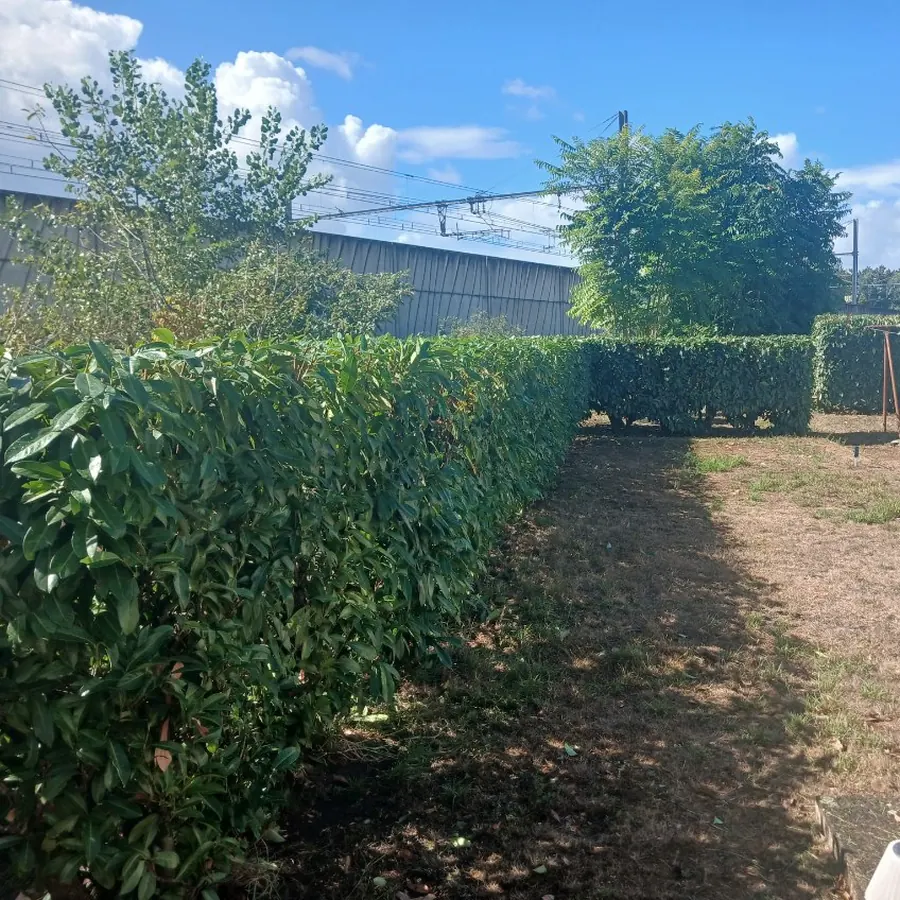

Le Bouscat
Arbre gagné par le lierre, en fond de parcelle
Deux vues du chantier. L'arbre est repris par le haut, branche par branche, dans un couloir étroit bordé d'une palissade et des jardins voisins.
Voici les interventions que nous menons le plus souvent, présentées avant et après. Un chantier se juge autant à l'état de l'arbre qu'à l'état du terrain une fois l'équipe partie. Utilisez les filtres pour ne voir qu'un type de prestation.
Le sommet dépassait largement la portée d'un taille-haie classique. La perche permet de le reprendre depuis la margelle, sans échafaudage au-dessus de l'eau.


Chaque fiche présente un chantier réel, photographié sur place.


Le Bouscat
Deux vues du chantier. L'arbre est repris par le haut, branche par branche, dans un couloir étroit bordé d'une palissade et des jardins voisins.
[[À CONFIRMER : commune]]
Aucune aire de chute disponible. L'arbre est démonté par sections descendues en rétention, retenues par une corde jusqu'au sol.
[[À CONFIRMER : commune]]
Le tronc présentait un décollement d'écorce au collet. La parcelle offrait une aire de chute, l'abattage direct a pu se faire d'un seul tenant.

Avant
AprèsAmbarès-et-Lagrave
La haie est ramenée en hauteur et remise d'aplomb, sommet et faces reprises dans le même passage. Les coupes sont évacuées et le pied dégagé.
[[À CONFIRMER : commune]]
Une charpentière arrachée restait accrochée dans le houppier. La dépose s'est faite en priorité, le reste de la taille a été replanifié.
[[À CONFIRMER : commune]]
La souche est fraisée sous le niveau du sol, les copeaux sont retirés et la fosse comblée. Le terrain redevient utilisable pour semer.
Le Bouscat
Les palmes mortes formaient un manchon brun sur toute la hauteur des stipes. Coupe au ras de la base, palmes emportées le jour même.
[[À CONFIRMER : commune]]
Le sol gorgé d'eau avait laissé partir la motte racinaire. L'arbre est resté appuyé sur un voisin, ce qui rend la coupe plus délicate qu'un abattage classique.
[[À CONFIRMER : commune]]
Le sommet dépasse largement la portée d'un taille-haie classique. La perche permet de le reprendre depuis la margelle, sans échafaudage au-dessus de l'eau.
Andernos-les-Bains
La haie débordait du muret sur la chaussée et masquait le portail. Reprise en hauteur et sur les deux faces, coupes emportées.
[[À CONFIRMER : photographies réelles avant et après, commune, essence, hauteur et durée de chaque chantier, accord écrit des propriétaires pour la publication]]
Une bonne photo après élagage ne montre pas un arbre plus petit. Elle montre un arbre qui garde sa forme naturelle, avec des coupes nettes et peu nombreuses.
Regardez le point de coupe. Une branche sectionnée juste au-dessus du bourrelet, ce renflement à la base de la branche, se referme correctement. Une coupe rase laisse une plaie que l'arbre ne cicatrise pas.
Observez ensuite le sol. Copeaux ramassés, pelouse intacte, massifs non piétinés. La qualité du travail se lit aussi là.
Méfiez-vous enfin des silhouettes en boule ou en poteau. Elles signalent un étêtage, une pratique qui produit des rejets mal ancrés et reporte le problème de quelques années.
Aucune photo n'est publiée sans l'accord du propriétaire. Les adresses précises et les éléments permettant d'identifier une habitation ne figurent pas sur le site.
[[À CONFIRMER : modèle d'autorisation de publication signé par les clients]]
Si l'un de ces cas ressemble à votre situation, indiquez-le lors de l'appel. Cela nous aide à prévoir la bonne équipe et le bon matériel.
Nous photographions la plupart des interventions, avant et après. Rien n'est publié sans l'accord du propriétaire, et aucune adresse précise n'apparaît sur le site.
Une zone d'élagage reste dangereuse tant que la coupe n'est pas terminée. Nous ne faisons pas visiter pendant l'intervention, mais nous pouvons montrer un travail terminé chez un client qui l'accepte.
Les branches sont broyées, les grumes découpées et le sol nettoyé avant notre départ. Les photos après intervention montrent l'état dans lequel le terrain est rendu.
Le sort du bois est détaillé sur la page évacuation des déchets verts.
Chaque page explique la méthode employée sur les chantiers ci-dessus.
Nos interventions se répartissent sur douze communes de la métropole.